SUMÁRIO
DOWNLOAD E INSTALAÇÃO

Figura 1: Página Inicial de Download.
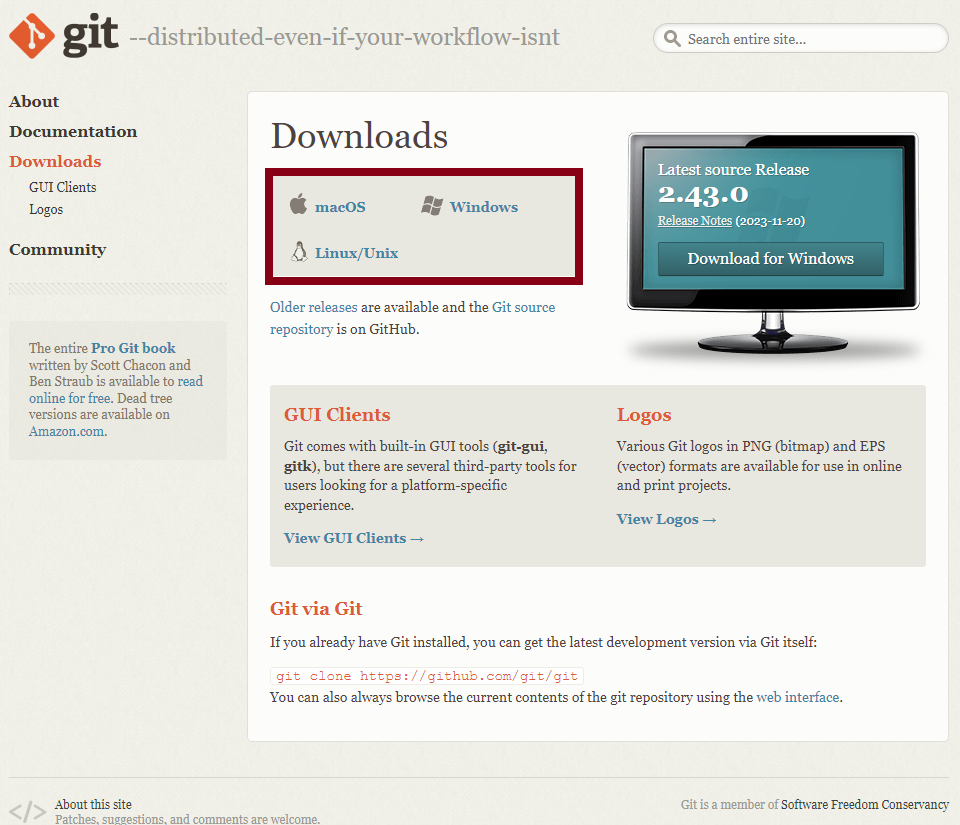Figura 2: Iniciar Download.
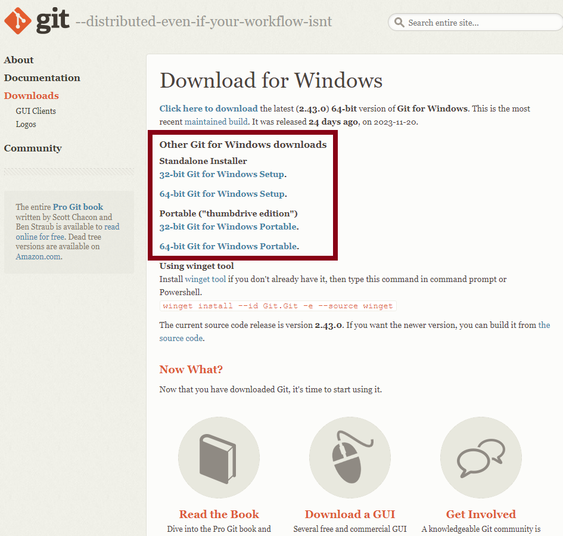Após a realização do download, caso você tenha baixado o instalador, então para utilizar o software você precisará basicamente clicar em "next" em todas as etapas da instalação. Caso tenha baixado a versão portable, a instalação não será necessária.
ALGUNS COMANDOS E SUAS FUNÇÕES

- git init Cria um repositório vazio, tornandoa a master/main do projeto
- git add nome_do_arquivo.extensao Manda os arquivos para área de steding, ou sejam, envia os arquivos para área de preparação de armazenamento dos arquivos no servidor
- git status Mostra os arquivos novos ou editados que precisam ser enviados ao servidor
- git commit -m "escreva uma mensagem" Envia os arquivos para o servidor, adicionando uma mensagem referente à subida dos arquivos
- git branch -M "main" Muda da branch master para a main
- git remote add origin link_da_branch Cria a conexão entre a máquina local e o servidor (remote), adicionando os arquivos no servidor informado (origin)
- git push -u origin main Envia os arquivos para o servidor informado
- git checkout -b "nome-da-branch" Sai da branch atual e cria uma nova branch
- git checkout main Sai da brach atual e vai para a main
MERGE
- git merge nome_da_branch Faz o merge da branch informada para a branch que está conectado no momento
- git push -u origin main Após o comando de merge é necessário realizar o push na main para que as informações sejam atualizadas no servidor
CLONE
- git clone link_da_branch Cria um clone da branc informada no link acima
CRIANDO UM REPOSITÓRIO
Criamos a pasta TreinoGit no diretório Meus Documentos do Windowns (Figura 3).
Figura 3: Criação da Pasta.
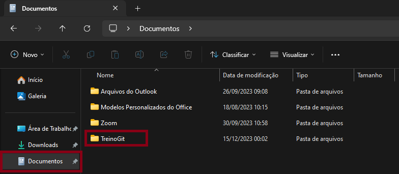Em seguida, dentro da pasta vamos adicionamos um arquivo chamado "Readme.md", no qual constará dentro do arquivo "Este é o meu primeiro arquivo no GitHub", conforme Figura 4.
Figura 4: Criação do Arquivo Readme.md
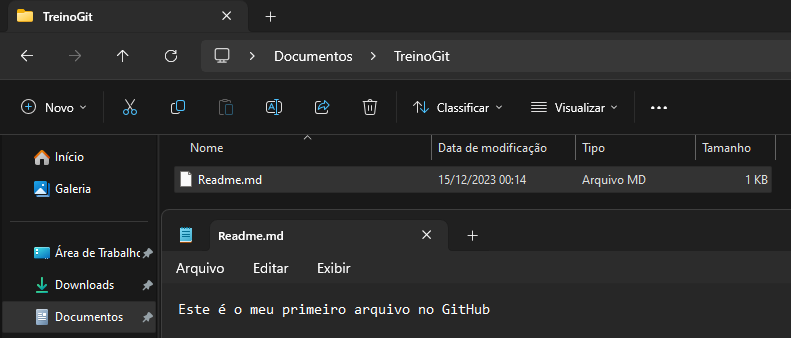Após a criação do arquivo, vamos clicar com o botão direito do mouse e selecionar Git Bash Here (Figura 5).
Figura 5: Abrindo o Terminal.
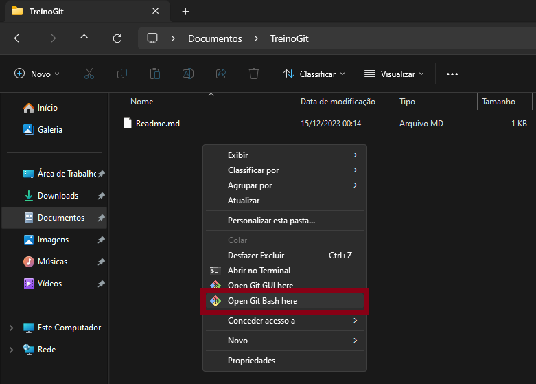Com o terminal do Git aberto, devemos primeiramente verificar se o diretório em que o mesmo está condiz com o caminho do arquivo que criamos, de acordo com a Figura 6, percebemos que o mesmo está correto.
Figura 6: Local do Arquivo.
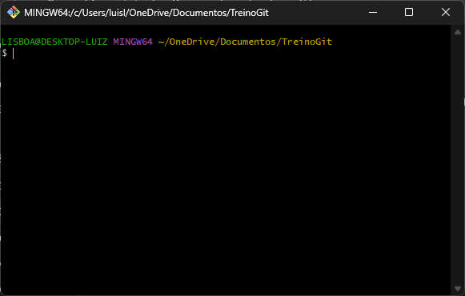Agora iremos tornar este diretório a nossa master/main, para isso digitamos o comando "git init" conforme a Figura 7, após a execução do comando percebemos que ao final do diretório está sendo exibido em azul "(master)", com isso, poodemos ter certeza de que o diretório foi transformado na master/main do projeto.
Figura 6: Local do Arquivo.
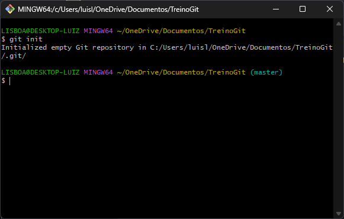Porém este folder está localmente na nossa máquina, ou seja, as informações ainda não foram migradas para o GitHub, para isso, vamos precisar criar este mesmo folder no GitHub. Para isto, basta fazer o login na sua página do git, clicar em "create new" e em seguida selecionar "New Repository" (Figura 7).
Figura 7: Criando Repositório no GitHub (Continua).
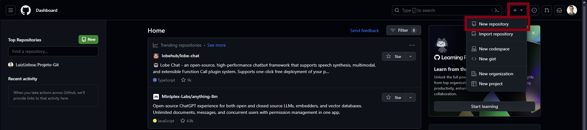Agora em "Repository Name" informamos o nome da pasta que criamos no nosso pc, em seguida defininos a privacidade do repositório, neste caso deixaremos "público", em seguida basta clicar em "create repository" (Figura 7.1).
Figura 7.1: Criando Repositório no GitHub (Fim).
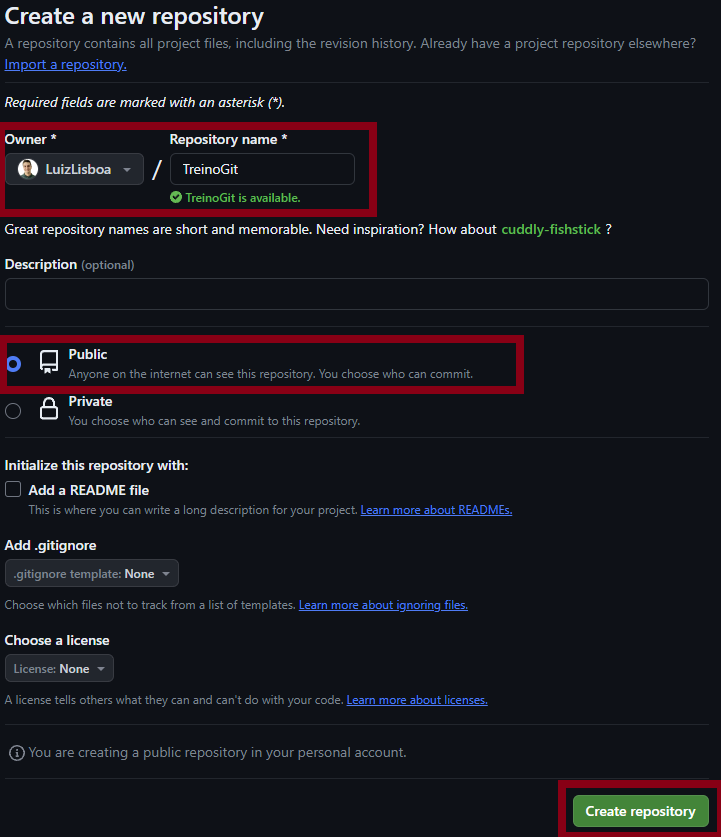Agora com o diretório criado no GitHub, voltaremos ao terminal do Git, e vamos inserir o comando "git status", perceberemos que no terminal será indicado que há um arquivo Readme.md que não foi "comitado" (Figura 8).
Figura 8: Verificando a Situação dos Arquivos.
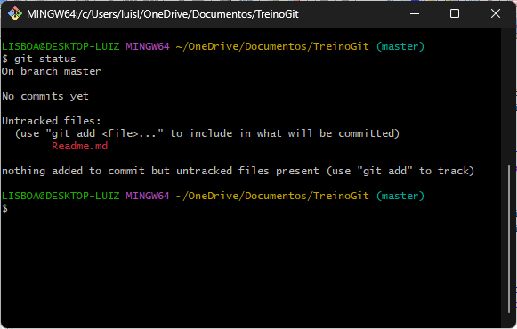Vamos adicionar os arquivos na área temporária utilizando o comando "git add Readme.md", ou de forma global para adicionar todos os arquivos existentes "git add *", em seguida iremos fazer o commit do arquivo, utilizando git commit -m "Meu primeiro commit", seremos informados que um arquivo foi comitado com uma linha inserida (Figura 9).
Figura 9: Adicionando Arquivos.
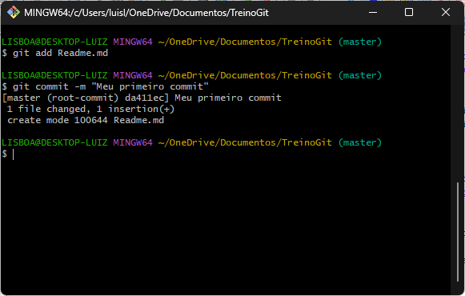Agora precisamos renomear a master para main, para isso, seguimos o comando da imagem abaixo, perceberemos que agora no nome ao final do diretório é "(main)".
Figura 9: Mudando nome para Main.
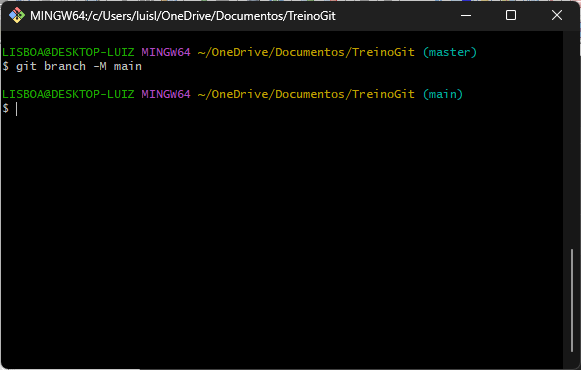Em seguida iremos criar a conexão entre a máquina local e o servidor do GitHub, para isso, precisamos obter o link do diretório no GitHub, para isso, basta copiar o link que aparece no início da página, conforme Figura 10.
Figura 10: Link Folder GitHub.
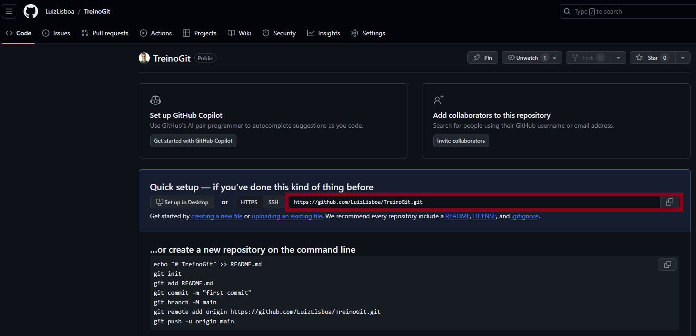Voltamos ao terminal do git digitamos o comando corforme a imagem abaixo, com isso, criamos a conexão entre os arquivos locais e o servidor.
Figura 11: Criando Conexão entre o Local e o Servidor.
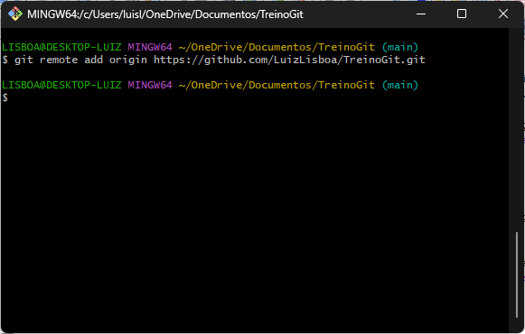Para que os arquivos sejam incluídos no servidor, basta digitar o comando na figura abaixo, agora se atualizarmos a página na web perceberemos que os arquivos estarão lá.
Figura 12: Subindo os Arquivos para o GitHub.
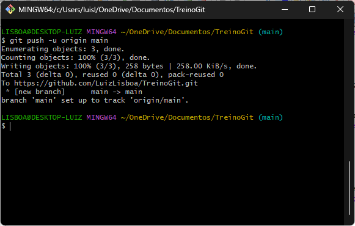